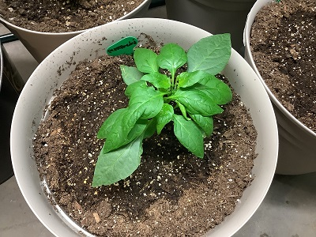
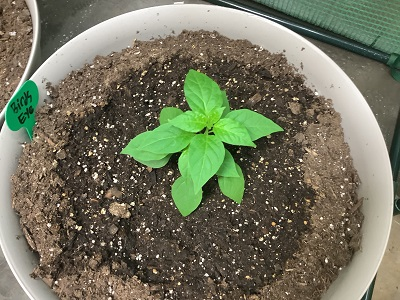
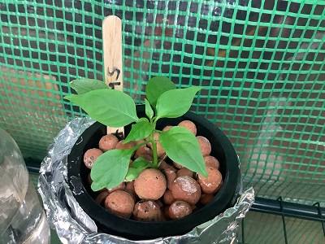
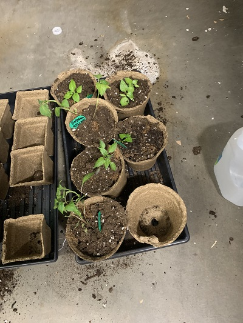

Pepper Experiments 101
| Topping Peppers |
|  |
| This plant was topped off the highest |
|  |
| This plant was topped off in the middle |
|  |
| This plant was topped off the lowest |
| Result is the higher you top off a plant the more bushy it is
|
| Transplanting Peppers
|
When transplantinmg peppers, first thing to make sure is not let the peppers go in shock. To prevent shock, after
transplant be sure to water generously. The plants will lean over for a day but then after that the plant will come back.
|  |
|
Caption: Plants in Shock
|